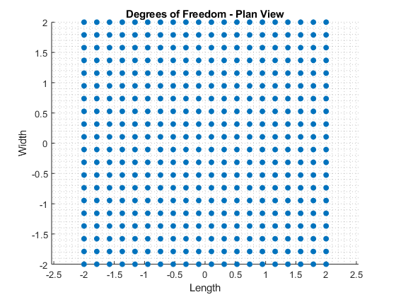
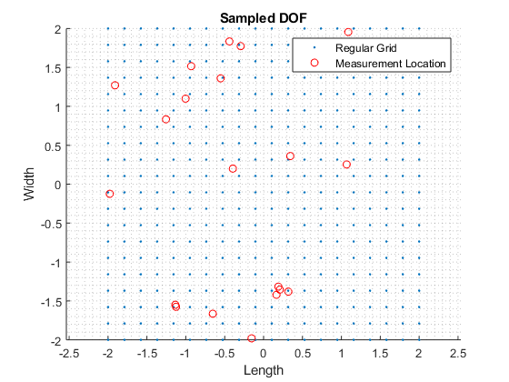
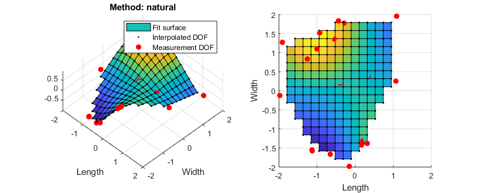
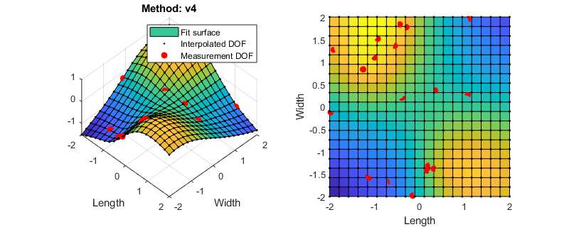

Interpolation Demo1
Example use of Matlab's griddata interpolation methods.
Contents
First, the solution
Consider an arbitrary 4 x 4 surface that has some known value, z, for each x, y coordinate pair; z = f(x,y):
% anonlymous function so we can re-use later
f = @(x,y) -1*sin(x(:).*y(:));
Sample the continuous function at 20 evenly spaced intervals along the length and width to produce 400 discrete samples.
Note the origin is arbitrarily placed at the center for convenience.
% longitudinal and transverse dof spacing (respectively) % these are the x and y "ticks" that we'll grid to form into unique pairs x = linspace(-2,2,20); y = linspace(-2,2,20); % meshgrid for inner dof sampling [X,Y] = meshgrid(x,y); % X and Y are 2d grids while x and y are vectors % evaluate anonymous function to return vector, z z = f(X,Y); % reshape the 1d vector to 2d grid Z = reshape(z,size(X,1),size(X,2));
Plot the discrete surface sampling in plan view:
figure scatter(X(:),Y(:),'filled') title('Degrees of Freedom - Plan View') xlabel('Length [ft]') ylabel('Width [ft]') grid minor axis equal snapnow
Plot the surface in 3D (left) and Plan views (right)
% explicitly set figure size for proportionss figure('position',[250 550 1000 400]/1.25) % 3d subplot(1,2,1) surf(X,Y,Z) hold on plot3(X(:),Y(:),Z(:),'ok') set(gca,'view',[-45,45]) axis equal xlabel('Length'); ylabel('Width'); hold off % plan subplot(1,2,2) surf(X,Y,Z) hold on plot3(X(:),Y(:),Z(:),'ok') set(gca,'view',[0,90]) axis equal xlabel('Length'); ylabel('Width'); hold off snapnow
Undersampled solution
Randomly (under) sample the surface at n points. Each DOF can be thought of as a measurement of the surface function, and we'll use these to interpolate back out the regular, full grid solution described above.
n = 20;
% generate random numbers within coordinate range
xr = (2+2).*rand(n,1) -2;
yr = (2+2).*rand(n,1) -2;
Show sampled DOF in plan view
figure scatter(X(:),Y(:),'.') hold on scatter(xr,yr,'ro') title('Sampled DOF') xlabel('Length') ylabel('Width') grid minor axis equal legend('Regular Grid','Measurement Location') snapnow
Interpolate DOF subset to known superset
Using the subset of known values (i.e. measurements), interpolate the full solution using Matlab's griddata. griddata has (5) interpolation methods to choose from (shown below): nearest, linear, natural, cubic, and v4 (biharmonic spine). Refer to griddata's documentation for more info.
% evaluate randomly chosen locations for measurement subset zr = f(xr,yr); % all griddata methods methods = {'nearest', 'linear', 'natural', 'cubic' ,'v4'}; % explicitly set figure size for proportionss figure('position',[250 550 1000 400]/1.25) % loop all interp methods and display results for ii = 1:length(methods) % interpolate Z = griddata(xr,yr,zr,X,Y,methods{ii}); % plot 3d subplot(1,2,1) plot_surface(X,Y,Z,xr,yr,zr); set(gca,'view',[45 45]) title(sprintf('Method: %s',methods{ii})); legend({'Fit surface','Interpolated DOF','Measurement DOF'},'location','northeast') % plot plan subplot(1,2,2) plot_surface(X,Y,Z,xr,yr,zr); % set to plan view set(gca,'view',[0 90]) % display figure when published snapnow end function plot_surface(X,Y,Z,x,y,z) surf(X,Y,Z) hold on plot3(X(:),Y(:),Z(:),'.k') plot3(x,y,z,'ro','markerface','red') xlabel('Length') ylabel('Width') axis equal hold off xlim([-2 2]) ylim([-2 2]) end 